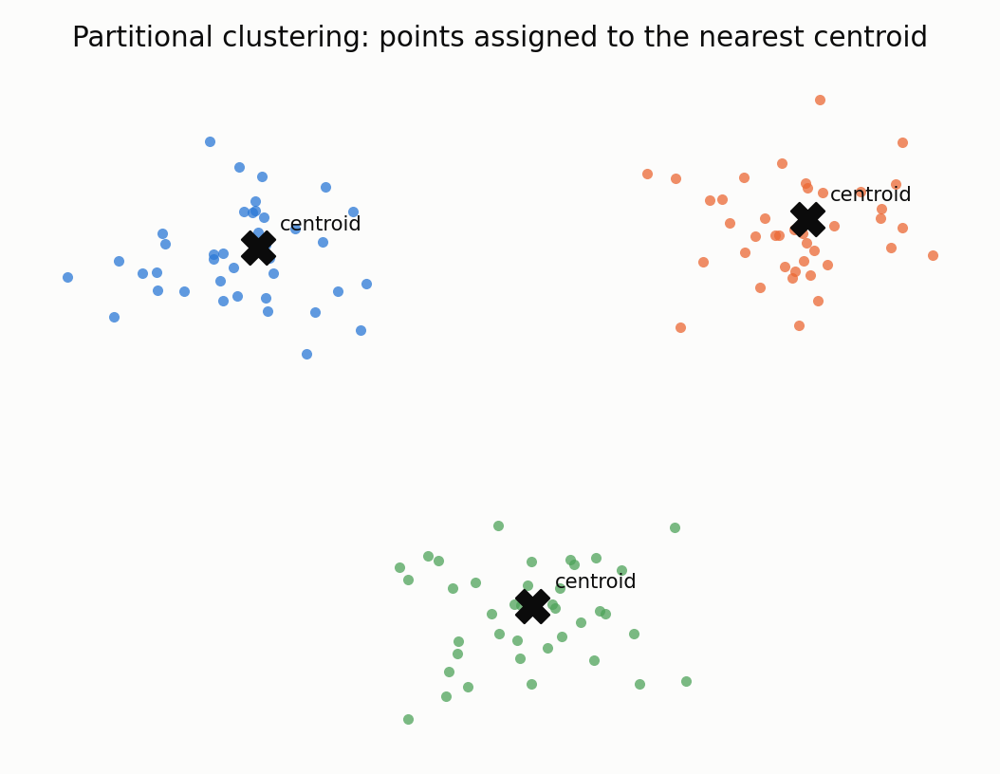
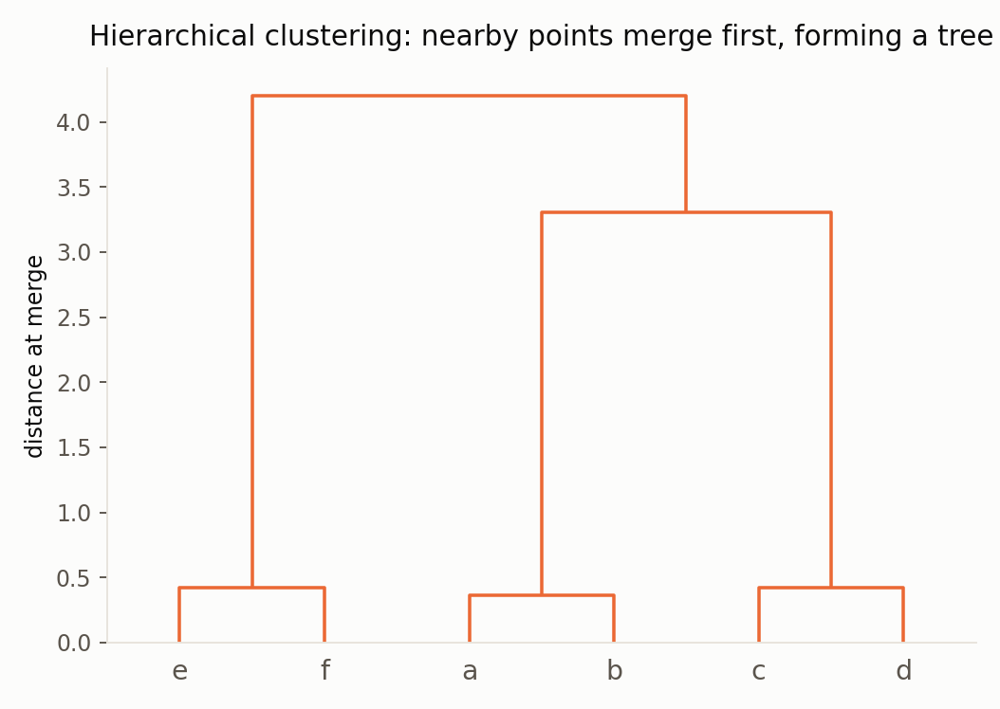
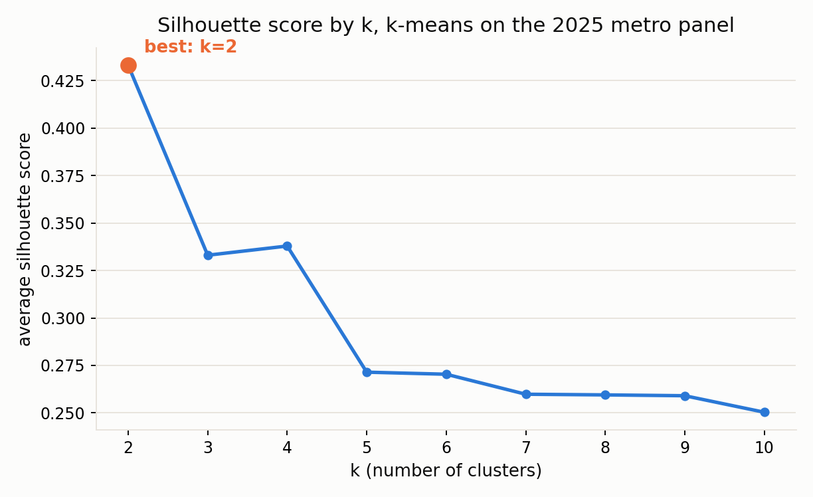
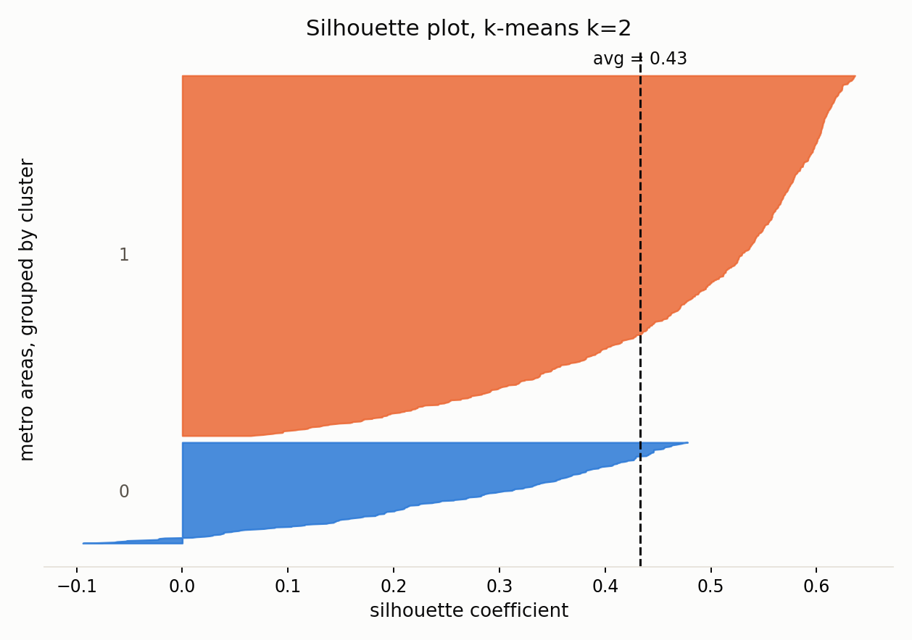
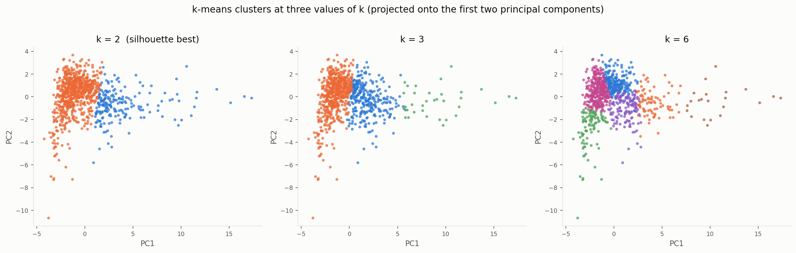
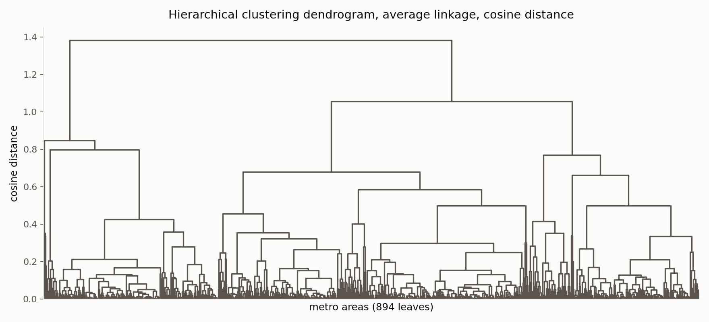
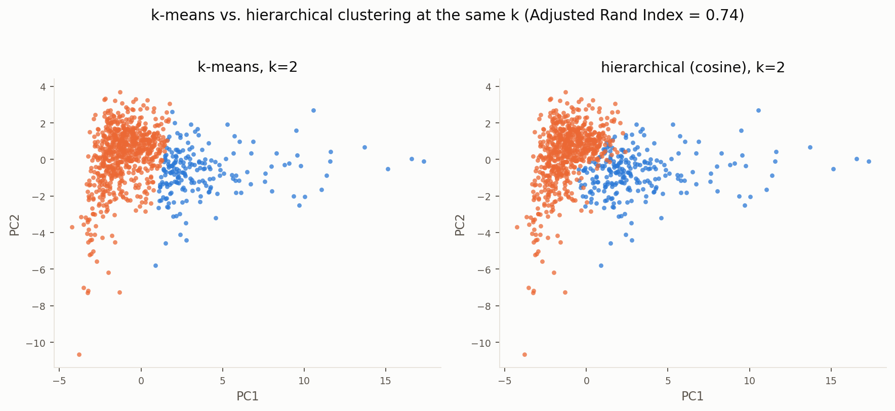

Clustering
Partitional and hierarchical clustering of metro housing markets
Overview
Clustering groups observation by similarity without the labels of the groups or what it should look like which is why its called unsupervised learning. 2 methods are used here. Partitional methods, k means is the standard example. Start by choosing a number of clusters k, place k centroids, and iteratively reassign each point to its nearest centroid and recompute the centroids until the assignments stop changing. Hierarchical clustering methods instead build a tree then merges. Every observation starts as its own cluster, and at each step the two closest clusters are merged, continuing until everything belongs to one cluster. Cutting that tree at a chosen height produces clusters at any k the reader wants, a flexibility k-means does not have on its own.


Both of these methods depends on the distance between observations and the choice of distance metric is not neutral. The k-means run here uses ordinary Euclidean distance on the standardized features, which treats each metro as a point in an eleven-dimensional space and measures straight-line closeness. The hierarchical clustering instead uses cosine distance, which measures the angle between two metros' feature vectors rather than their magnitude.
On this particular dataset this distinction is very important since many of the created features (the home value, the price-to-income ratio, the monthly payment, etc.) show almost perfect correlation with each other. The cosine distance defines groupings of metro areas having similar feature profiles, and therefore this method offers an alternative way of detecting patterns compared to the Euclidean distance method. In this case clustering is used for discovering new information rather than predicting something.
Data Prep
Clustering and PCA both require unlabeled, numeric data on comparable scales. The input here is the 2025 cross-section of the metro-year panel: one row per metropolitan area, 894 of them, with eleven engineered numeric features describing each metro's home value, price growth, volatility and affordability relative to a national income benchmark. No ownership rate, age bracket or other outcome variable is included, since adding one would make this a labeled rather than unlabeled dataset. All eleven features were standardized to zero mean and unit variance before either method ran, because the raw columns sit on very different scales (dollars in the hundreds of thousands next to percentages and small ratios) and an unscaled distance would be dominated by whichever column happens to have the largest numbers.

metro_2025_unsupervised.csv, the 894-metro by 11-feature table clustering runs on (4 of 11 columns shown).
Full file on GitHub ↗Code
Python, using scikit-learn for k-means and SciPy for hierarchical clustering. Hierarchical clustering uses cosine distance with average linkage; k-means uses Euclidean distance on the same standardized features.
k_range = list(range(2, 11))
sil_scores = [silhouette_score(X, KMeans(n_clusters=k, n_init=10,
random_state=42).fit_predict(X)) for k in k_range]
best_k = k_range[int(np.argmax(sil_scores))]
⋮ # hierarchical clustering with cosine distance, the point of this script
Z = linkage(X, method="average", metric="cosine")
hclust_labels = fcluster(Z, t=hclust_suggested_k, criterion="maxclust")
ari = adjusted_rand_score(km_same_k, hclust_labels)- prep_unsupervised_data.py : builds the standardized 894×11 table from the metro panel
- run_clustering.py : k-means sweep, hierarchical clustering, comparison figures
Results
The silhouette method was run across every k from 2 to 10 for k-means, and hierarchical clustering was cut at the height suggested by its own largest internal gap. Both methods point to the same answer from two different directions.

| k | Silhouette score |
|---|---|
| 2 | 0.433 |
| 3 | 0.333 |
| 4 | 0.338 |
| 5 | 0.271 |
| 6 | 0.270 |
| 7 | 0.260 |
| 8 | 0.259 |
| 9 | 0.259 |
| 10 | 0.250 |




| Cluster | Metros | Avg. home value | Avg. price/income | Avg. payment % income |
|---|---|---|---|---|
| 0, expensive | 196 | $541,934 | 9.16 | 56.1% |
| 1, affordable | 698 | $229,315 | 3.87 | 23.7% |
Conclusions
Both methods agree that American metropolitan housing markets split most cleanly into two groups rather than many: the silhouette method selects k = 2 for k-means, with an average silhouette score of about 0.43, and the hierarchical dendrogram's largest internal gap also points to two clusters when cut. The two methods assign metros to those two groups quite similarly, with an Adjusted Rand Index of about 0.74 between k-means and hierarchical clustering at the same k, a reasonably strong agreement for two algorithms measuring similarity in different ways (Euclidean versus cosine distance). Looking at what separates the two clusters, the divide tracks overall affordability: the smaller cluster of 196 metros averages a home value near $542,000 and a payment-to-income burden above 56 percent, while the larger cluster of 698 metros averages a home value near $229,000 and a burden near 24 percent. This is consistent with earlier EDA findings that metropolitan markets differ far more from each other than any single national trend would suggest, and it gives a first, purely data-driven answer to the research question of whether a young buyer's chances depend heavily on which metro they live in: the data say yes, and the split looks closer to binary, affordable versus not, than finely graded.